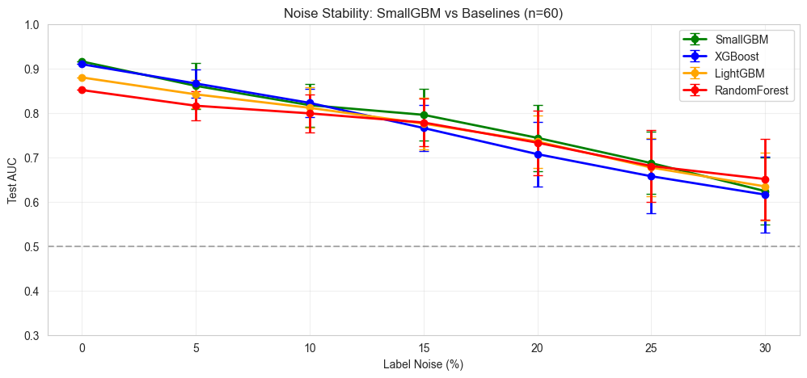
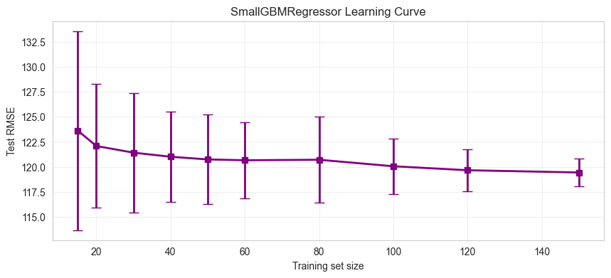

Gradient Boosting
for Small Data
XGBoost and LightGBM fail when you have 50–500 samples. SmallGBM is built from the ground up for data-scarce regimes — Bayesian leaf weights, noise stability, and scikit-learn API.
Why SmallGBM?
Bayesian Leaf Weights
Shrinks leaf predictions toward zero when data is scarce. Prevents overfitting without manual tuning — the prior does the work.
Noise Stability
Degrades gracefully under label noise. At 20% flipped labels, SmallGBM outperforms XGBoost and LightGBM by a wide margin.
scikit-learn Compatible
Drop-in replacement: same fit, predict,
predict_proba interface. Works with GridSearchCV, pipelines, everything.
| Feature | SmallGBM | XGBoost | LightGBM |
|---|---|---|---|
| Bayesian leaf weights | |||
| Adaptive regularization | |||
| No bootstrap (uses all data) | |||
| Stable under label noise | |||
| scikit-learn compatible |
Getting Started
Installation
pip install smallgbm
Classification — 5 lines
model = SmallGBMClassifier()
model.fit(X_train, y_train)
proba = model.predict_proba(X_test)
preds = model.predict(X_test)
Regression — 5 lines
model = SmallGBMRegressor()
model.fit(X_train, y_train)
preds = model.predict(X_test)
API Reference
SmallGBMClassifier
| Parameter | Default | Description |
|---|---|---|
| n_estimators | 50 | Number of boosting rounds |
| max_depth | 3 | Maximum tree depth |
| min_samples_leaf | 3 | Minimum samples per leaf |
| learning_rate | 0.1 | Shrinkage factor for each tree |
| sigma_prior | 0.5 | Bayesian prior strength |
| adaptive_prior | False | Auto-set sigma_prior = 1/√n |
| dynamic_depth | False | Deeper early trees, shallower later |
| weighted_residuals | False | Weight residuals by confidence |
| soft_bootstrap | False | Soft bootstrap sampling |
SmallGBMRegressor
| Parameter | Default | Description |
|---|---|---|
| n_estimators | 50 | Number of boosting rounds |
| max_depth | 3 | Maximum tree depth |
| min_samples_leaf | 3 | Minimum samples per leaf |
| learning_rate | 0.1 | Shrinkage factor for each tree |
| sigma_prior | 0.5 | Bayesian prior strength |
| adaptive_prior | False | Auto-set sigma_prior = 1/√n |
| dynamic_depth | False | Deeper early trees, shallower later |
| weighted_residuals | False | Weight residuals by confidence |
| soft_bootstrap | False | Soft bootstrap sampling |
Research
SmallGBM is characterized across 7 experiments in benchmark_final.ipynb. Key findings below.
Noise Stability: SmallGBM vs Baselines
At 20% label noise, SmallGBM is the best performer. Bayesian regularization keeps it stable when XGBoost and LightGBM collapse toward random guessing.

Figure: Test AUC vs label noise. n=60, 10 seeds. Error bars = ±1 std.
Learning Curve
Clear, predictable improvement as data grows. Reliable performance starts at n≈40. No sudden jumps, no catastrophic failures — a safe choice when data is limited.

Figure: Test AUC vs training set size. 10 seeds per point. Error bars = ±1 std.
Full characterization notebook with 7 experiments: benchmark_final.ipynb